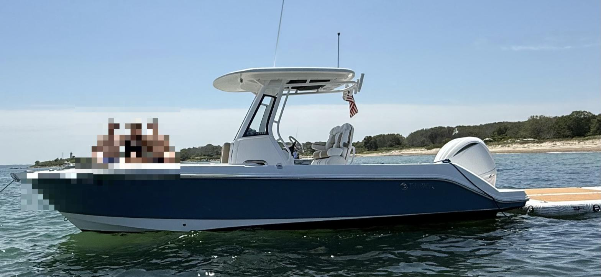

Tap a destination for its full trip call — or start from a destination in the planner below.
Start with a destination. Hartigang turns the live forecast into a route-specific trip call and a practical read on the ride home.
Choose destination ⟶Loading forecast…
Scores combine wave height and period, wind, gusts, rain risk, route exposure, and your crew profile. Pick a day to load its trip call and hourly build.
Ask a complete question in plain English. The advisor reads your question, the selected day and destination, the hourly build, tide timing, and crew comfort — and answers the question you actually asked.
Hartigang is a 2024 EdgeWater 230 CC — a 23-foot center console powered by a single 300 HP Yamaha outboard. Hartigang's day starts at the home dock inside Popponesset Bay — not at a generic Cape Cod waypoint. Every route begins at the home port, clears the local entrance, and weighs the exposed return leg back across Nantucket Sound.

A quick, no-drama rundown so everyone knows where things are and how we handle the unexpected. None of this means we expect trouble — it just means we’re ready for it.
Stowed in the console — in the compartment above the helm. There’s one for everyone aboard. If you’d feel more comfortable wearing one at any point, grab it; no one will bat an eye.
The VHF stays on Channel 16 — the hailing and distress channel monitored by the Coast Guard. That’s where we call for help if we ever need it.
Ask questions and voice any concern — about the weather, the ride, feeling seasick, anything. Nothing is too small. A good day on the water is one where everyone feels comfortable saying something.
This planner is decision support, not an official forecast or a substitute for navigation, judgment, or local knowledge.